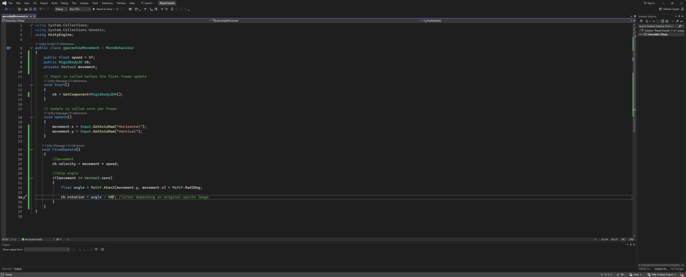
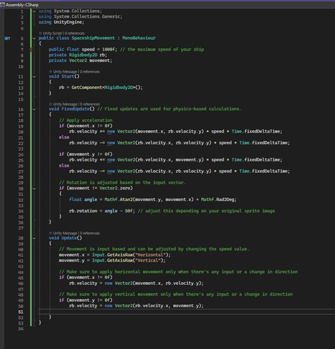
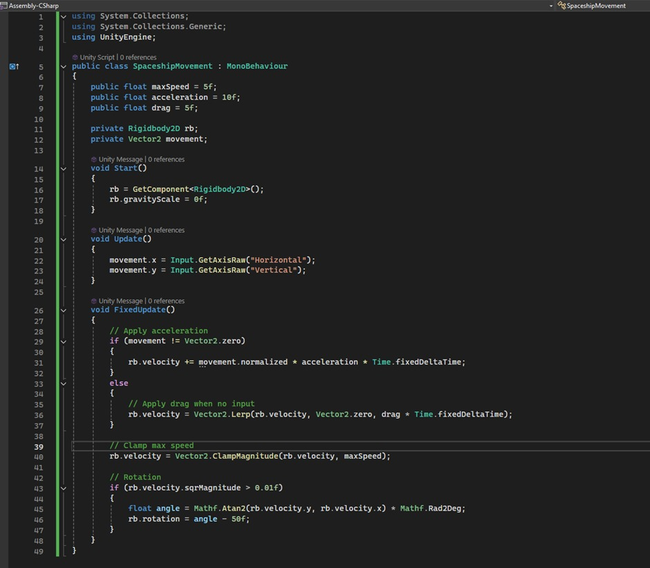
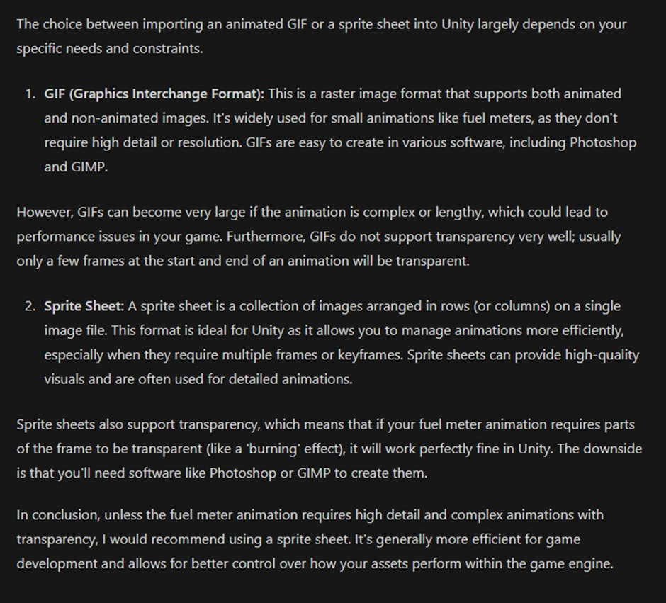
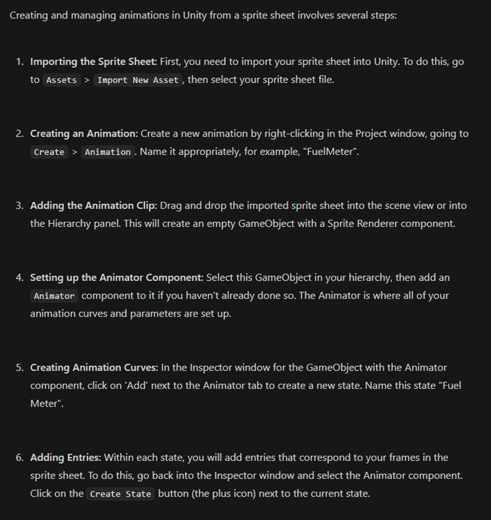
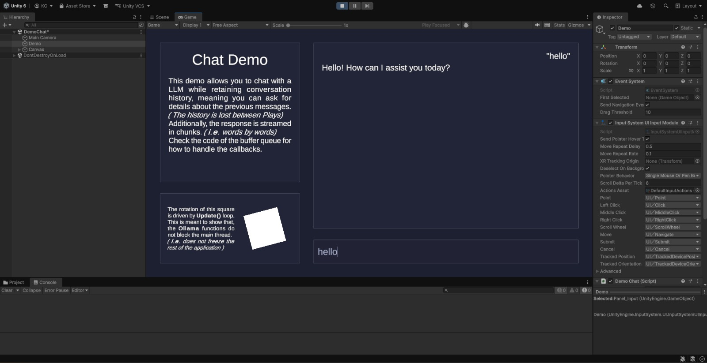
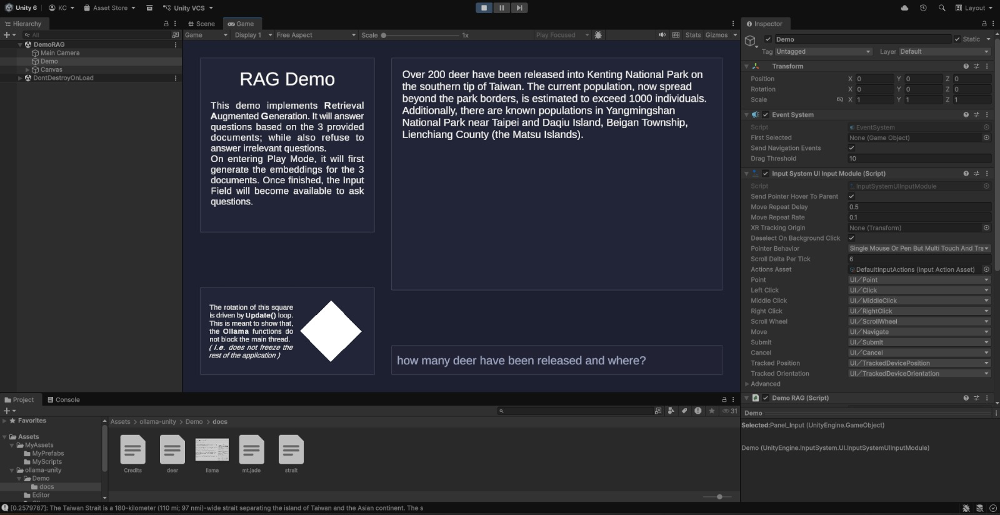
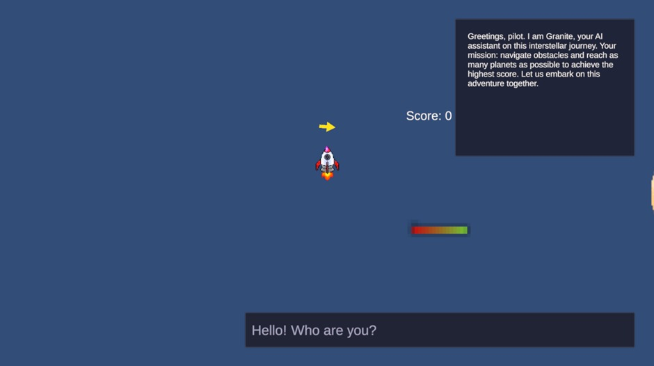

Project Overview
The concept behind our project was to create a space-themed game experience alongside an interactive development blog inspired by exploration and progression through space. The overall idea focused on combining creative game design with immersive web development to produce something that felt visually engaging while also documenting the full design journey of the project. Drawing inspiration from classic space games and futuristic sci-fi aesthetics, the team aimed to create a cohesive experience where both the game and the blog shared the same visual identity and theme.
Katie's post
I created a basic WASD movement script for the spaceship:

However, it was too clunky and didn’t feel like a spaceship. I contacted Granite via Ollama with the following prompt:
“Hi there! The following is my movement script for a spaceship I have made in Unity (using C#) would you please make some tweaks to make the movement feel more 'spaceshippy'? Perhaps some acceleration/inertia? Thanks!”
The LLM responded with the following:
Your current script is a good start for spaceship movement. I've made some adjustments to add acceleration and inertia for a more realistic effect.

These changes add acceleration and inertia by applying velocity incrementally rather than setting it directly. This results in smoother movements that feel more realistic for a spaceship. Please adjust the speed value to get the desired speed of your spaceship.
Remember, this script is only modifying the Rigidbody2D's linear velocity. The actual movement will also depend on any forces or collisions applied to the ship.
This gave me a good foundation for inertia, and a more ‘spaceship-like’ acceleration logic ideas, to which I tweaked as follows (in order to clamp speed and reduce jittering):

Once the spaceship had a satisfactory fuel script functionality, I wanted to synchronize it with my peer’s pre-existing fuel meter animation. I decided to turn to Granite for solutions, measuring its success with broader technological advice, as opposed to explicit coding solutions.
I began with a testing statement, using the following prompt:
I am creating a spaceship game in Unity 2D, and my peer has submitted a ‘fuel meter’ animation of which I would like to synch up with pre-existing fuel depletion logic, visually reflecting the ships remaining fuel. What would be the best format to import this animation in, GIF or sprite sheet?
This was a test of Granite’s general knowledge, as Unity does not support GIF format for direct animation implementation, therefore the AI should know that a sprite sheet is the more desirable approach. This was Granite’s response:

Granite did not know that GIF format is incompatible with Unity’s animation feature and was unable to provide a truly helpful response because of this information gap. However, it did have a more general knowledge of GIFs and sprite sheets, and offered comprehensive broader advice regarding both of these, comparing and contrasting variables - such as size and quality - in a manner that was concise and readable.
From this experiment it was established that Granite thrives on broader information, performing most reliably when queried on more global concepts, as opposed to specific engines/applications. Additionally, Granite excels amidst the organisation and presentation of information for the purpose of being digested by users.
Subsequently, I wanted to test Granite’s specific instructive capabilities, and so I prompted more information in the following way:
I have decided to go with the sprite sheet, as it is a more robust format. How do I now split up the individual sprites within the sheet? Additionally, once the sprites are split, how can I turn them into a Unity recognised animation?
To which Granite responded:

Contrary to the prior test, Granite provided much more knowledge specific to Unity, naming intricate components and diving deeper into their functionality, giving me a better understanding of the Unity animation workflow as a whole. The instructions were clear, but general, more geared towards general animating as opposed to my specified ‘split sprite sheet frame’ animation. Additionally, the AI ignored my prior question regarding the splitting of the sheet itself.
To conclude, Granite is a strong tool for broad advice and information retrieval, most reliable when provided with specific information and greater detail within user prompts, though all produced information is more geared towards the general topic of the prompt, rather than these specific elements. It is most effective when given one query at a time, and was useful to work with as a developer under the context of advice and instruction.

Unity + Ollama Granite test environment (GitHub demo reference).

This experiment tested how Granite performs with limited contextual data sources and showed strong results in structured information retrieval tasks. Ollama unity RAG working with unity (via the same github copyrighted repo). The function of this is to see how well Granite works with a finite source of information (in this case a few txt files about Kenting National Park). The verdict is that granite ACTUALLY WORKS WELL in this context, and can be used in our project much the same way in regards to feeding players pre-written game instructions/world information
Imported the granite demo RAG into the unity project (GIVE CREDIT TO ‘Haoming’ ON GITHUB)
Then went into the setup files and changed the LLM prompt to the following:
return new Message("system", "You are an assistant for question-answering tasks, you are 'Granite', a spaceship terminal ai assistant to the pilot, answer in the style of a sci-fi artificial intelligence assistant. Do not break character. KEEP ANSWERS BRIEF AND CONCISE. Answer in second person (e.g. you/you're/yours). Use only the following piece of context to answer the question. " + "If no answer can be found within the context, simply say so. Do **NOT** answer outside of context. (Do not mention what the context is about either). DO NOT MENTION THE CONTEXT.\n" + $"Context:\n\"\"\"\n{context}\n\"\"\"" );
It followed these instructions really well, seemingly responding better to the instructions when capitalised and bold. No instructions were ignored.
I then created a ‘gameInstructions.txt’ file and delivered the following instructions:
Objective and purpose:
You are a pilot of a spaceship in outer space with limited fuel and health. You must navigate obstacles. If you run out of fuel and health, you lose and you die. In order to obtain more fuel and/or health, you must follow your arrow guide to find planets.
Your goal is to go to as many planets as possible without running out of fuel or health in order to increase your score. You are trying to obtain the high score.
Spaceship:
You control and pilot the spaceship. You can shoot and avoid obstacles. Your ship has limited fuel and health.
Planets:
Planets help you stock up on fuel and health and increase your score. When you land on a planet, you will play a minigame which provides rewards depending on how well you perform. Your performance is indicated by the score you receive at the end of the minigame.
After completing a minigame on a planet, the player can choose to put reward points into either fuel or health (or both), increasing the amount of whichever they select. This is the only way to obtain more fuel or health.
Score:
Your score is calculated by the number of planets you visit and your minigame performance. Scores are visible in the top right of the display. When the game ends, your score is shown on the scoreboard.
Obstacles:
You may run out of either fuel or health and die. You may encounter asteroids and enemies that need to be shot with your spaceship's laser.
The LLM responded well to these instructions and accurately conveys the game’s objectives to the player in character.
